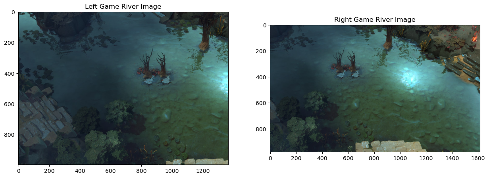
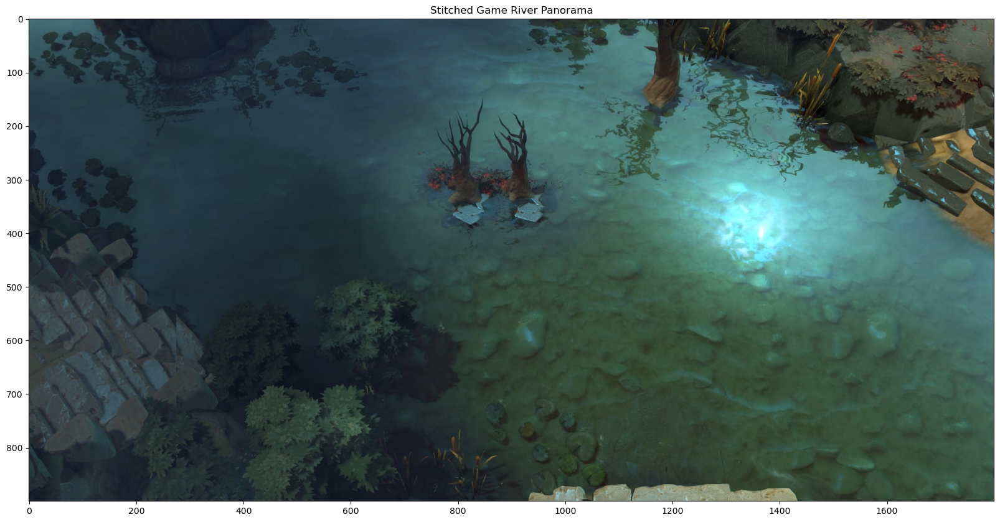

In this project, I took a look into the fascinating process of image mosaicing by warping and stitching multiple photographs into seamless mosaics. Using manually selected correspondence points, I also aligned images through homography transformations. This technique not only allows for the creation of captivating panoramas, but also demonstrates how projective warping can be applied to rectify images to fit alternate perspectives.
Warp the Images
To align images into a seamless mosaic, I implemented a custom warping function that leverages a homography matrix to map the source image into the target perspective. The homography matrix transforms the corners of the source image, defining the new bounds and creating a pixel grid for the warped image. Using inverse mapping, each pixel in the target image is then traced back to its corresponding location in the source image. At these locations, I applied bilinear interpolation to compute smooth pixel values by blending the intensities of neighboring pixels. This ensures that the transitions between images are visually smooth and free of harsh boundaries.
The final warped images preserve spatial relationships and aligns accurately with the target image, setting the stage for blending multiple images into a unified mosaic.
Image Rectification
As part of testing the homography and warping functions, I performed image rectification on objects with known shapes. This process ensures that the code works correctly by transforming tilted or distorted objects back into their proper rectangular form. I captured images with objects such as my laptop screen and LED remote at an angle and used the homography transformation to "flatten" their appearance.
Interestingly, when rectifying the remote control, the transformation not only corrected the perspective but also revealed finer details that were initially hard to see. Surprisingly, symbols like the AUTO button and the W symbol (for white light) became clearly visible after rectification. This demonstrates the power of perspective correction in uncovering subtle features within an image.
Results

Blending into a Mosaic
First, I computed a homography matrix to warp one image onto the plane of another. Then, I calculated the bounding box and necessary shifts to align the warped image with the target image. Finally, both images were stitched together within the mosaic by placing them at their computed positions in the combined frame.
I applied this process to create a mosaic of stuffed animals (real-world example) and used blending techniques to eliminate sharp edges. I also experimented with Dota 2 screenshots to explore how parts of a video game map look on a larger scale, as the in-game view is limited. I tested the process on different landscapes, including the “lane,” which contains mostly similar textures, and the “river,” which has intricate water details.
Real-Life Results
Game Results (Lane)

Game Results (River)

